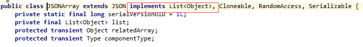

Introducción a Fastjson
Fastjson es una biblioteca de Java que puede convertir objetos Java a formato JSON; por supuesto, también puede convertir cadenas JSON a objetos Java.
Fastjson puede operar con cualquier objeto Java, incluso aquellos preexistentes que no tienen código fuente.
Dirección del código fuente de Fastjson:https://github.com/alibaba/fastjson
Wiki en chino de Fastjson:https://github.com/alibaba/fastjson/wiki/Quick-Start-CN
Características de Fastjson
- Proporciona dos herramientas de análisis: para el lado del servidor y para el cliente Android, con un buen rendimiento.
- Proporciona los métodos toJSONString() y parseObject() para convertir entre objetos Java y JSON. Llamar al método toJSONString() convierte el objeto en una cadena JSON, mientras que parseObject() convierte la cadena JSON en un objeto.
- Permite convertir objetos preexistentes que no pueden modificarse (solo con clase, sin código fuente).
- Amplio soporte de genéricos de Java.
- Permite la representación personalizada de objetos y clases de serialización personalizadas.
- Admite objetos arbitrariamente complejos (con profundas jerarquías de herencia y tipos genéricos ampliamente utilizados).
Descarga y uso
Puedes descargarlo directamente desde el repositorio central de Maven:
https://repo1.maven.org/maven2/com/alibaba/fastjson/
O configurar la dependencia de Maven:
<dependency>
<groupId>com.alibaba</groupId>
<artifactId>fastjson</artifactId>
<version>x.x.x</version>
</dependency>
Dondex.x.xes el número de versión; usa una versión específica según sea necesario. Se recomienda usar la última versión.
Convertir objetos Java a formato JSON
Define el siguiente JavaBean Person:
Ejemplo
@JSONField(name = "AGE")
private int age;
@JSONField(name = "FULL NAME")
private String fullName;
@JSONField(name = "DATE OF BIRTH")
private Date dateOfBirth;
public Person(int age, String fullName, Date dateOfBirth) {
super();
this.age = age;
this.fullName= fullName;
this.dateOfBirth = dateOfBirth;
}
// getters y setters estándar
}
Puedes usar JSON.toJSONString() para convertir un objeto Java a un objeto JSON:
@Before
public void setUp() {
listOfPersons.add(new Person(15, "John Doe", new Date()));
listOfPersons.add(new Person(20, "Janette Doe", new Date()));
}
@Test
public void whenJavaList_thanConvertToJsonCorrect() {
String jsonOutput= JSON.toJSONString(listOfPersons);
}
El resultado de salida es:
[
{
"AGE":15,
"DATE OF BIRTH":1468962431394,
"FULL NAME":"John Doe"
},
{
"AGE":20,
"DATE OF BIRTH":1468962431394,
"FULL NAME":"Janette Doe"
}
]
También podemos personalizar la salida y controlar el orden de los campos, el formato de visualización de fechas, las marcas de serialización, etc.
A continuación, actualizamos el bean y agregamos algunos campos:
private int age;
@JSONField(name="LAST NAME", ordinal = 2)
private String lastName;
@JSONField(name="FIRST NAME", ordinal = 1)
private String firstName;
@JSONField(name="DATE OF BIRTH", format="dd/MM/yyyy", ordinal = 3)
private Date dateOfBirth;
En el código anterior enumeramos las categorías de parámetros básicos y usamos la anotación @JSONField para lograr una conversión personalizada:
- format El parámetro se usa para formateardatela propiedad.
- De forma predeterminada, la biblioteca FastJson puede serializar entidades JavaBean, pero podemos usarserialize para especificar que el campo no se serialice.
- Usarordinal el parámetro para especificar el orden de los campos.
Así, el resultado de salida anterior es:
[
{
"FIRST NAME":"Doe",
"LAST NAME":"Jhon",
"DATE OF BIRTH":"19/07/2016"
},
{
"FIRST NAME":"Doe",
"LAST NAME":"Janette",
"DATE OF BIRTH":"19/07/2016"
}
]
@JSONField
Objetos sobre los que actúa @JSONField:
- 1. Field
- 2. Métodos Setter y Getter
Nota:FastJson, al realizar operaciones, se basa en los métodos getter y setter, no en los campos (Field).
Nota:Si la propiedad es privada, debe tener un método set. De lo contrario, no se puede deserializar.
public @interface JSONField {
// Configurar el orden de serialización y deserialización; solo compatible desde la versión 1.1.42
int ordinal() default 0;
// Especificar el nombre del campo
String name() default "";
// Especificar el formato del campo, útil para formatos de fecha
String format() default "";
// Si serializar
boolean serialize() default true;
// Si deserializar
boolean deserialize() default true;
}
2. Método de configuración de JSONField
FieldInfo se puede configurar en métodos getter/setter o en campos. Por ejemplo:
2.1 Configurado en getter/setter
private int id;
@JSONField(name="ID")
public int getId() {return id;}
@JSONField(name="ID")
public void setId(int value) {this.id = id;}
}
2.2 Configurado en el campo (field)
@JSONField(name="ID")
private int id;
public int getId() {return id;}
public void setId(int value) {this.id = id;}
}
3. Usar format para configurar el formato de fecha
// Configurar la serialización y deserialización de date usando el formato yyyyMMdd
@JSONField(format="yyyyMMdd")
public Date date;
}
4. Usar serialize/deserialize para especificar que el campo no se serialice
@JSONField(serialize=false)
public Date date;
}
public class A {
@JSONField(deserialize=false)
public Date date;
}
5. Usar ordinal para especificar el orden de los campos
De forma predeterminada, fastjson serializa un java bean según el orden alfabético del fieldName; puedes usar ordinal para especificar el orden de los campos. Esta función requiere la versión 1.1.42 o superior.
@JSONField(ordinal = 3)
private int f0;
@JSONField(ordinal = 2)
private int f1;
@JSONField(ordinal = 1)
private int f2;
}
FastJson también admite la función de serialización BeanToArray:
String jsonOutput= JSON.toJSONString(listOfPersons, SerializerFeature.BeanToArray);
El resultado de salida es:
[
[
15,
1469003271063,
"John Doe"
],
[
20,
1469003271063,
"Janette Doe"
]
]
Crear objetos JSON
Crear objetos JSON es muy sencillo: solo necesitas usar JSONObject (el objeto json proporcionado por fastJson) y JSONArray (el objeto de arreglo json proporcionado por fastJson).
Podemos considerar JSONObject como un Map<String,Object>, solo que JSONObject proporciona métodos más ricos y convenientes para operar con las propiedades del objeto. Veamos el código fuente.

De igual manera, podemos considerar JSONArray como un List<Object>; podemos ver JSONArray como una colección de objetos JSONObject.

Además, como JSONObject y JSONArray heredan de JSON, también se pueden usar directamente ambos para convertir entre cadenas en formato JSON, objetos JSON y javaBeans; sin embargo, para evitar confusiones, seguimos usando JSON.
public void whenGenerateJson_thanGenerationCorrect() throws ParseException {
JSONArray jsonArray = new JSONArray();
for (int i = 0; i < 2; i++) {
JSONObject jsonObject = new JSONObject();
jsonObject.put("AGE", 10);
jsonObject.put("FULL NAME", "Doe " + i);
jsonObject.put("DATE OF BIRTH", "2016/12/12 12:12:12");
jsonArray.add(jsonObject);
}
String jsonOutput = jsonArray.toJSONString();
}
El resultado de salida es:
[
{
"AGE":"10",
"DATE OF BIRTH":"2016/12/12 12:12:12",
"FULL NAME":"Doe 0"
},
{
"AGE":"10",
"DATE OF BIRTH":"2016/12/12 12:12:12",
"FULL NAME":"Doe 1"
}
]
Convertir cadenas JSON a objetos Java
Ahora que hemos aprendido a crear objetos JSON y a convertir objetos Java en cadenas JSON, necesitamos entender cómo analizar JSON:
public void whenJson_thanConvertToObjectCorrect() {
Person person = new Person(20, "John", "Doe", new Date());
String jsonObject = JSON.toJSONString(person);
Person newPerson = JSON.parseObject(jsonObject, Person.class);
assertEquals(newPerson.getAge(), 0); // Si configuramos la serialización como false
assertEquals(newPerson.getFullName(), listOfPersons.get(0).getFullName());
}
Podemos usar JSON.parseObject() para convertir una cadena JSON en un objeto Java.
Nota: al deserializar como objeto, debe haber un constructor predeterminado sin argumentos; de lo contrario, se producirá una excepción:
com.alibaba.fastjson.JSONException: default constructor not found.
A continuación se muestra una simple prueba de ejemplo:
Person [age=20, fullName=John Doe, dateOfBirth=Wed Jul 20 08:51:12 WEST 2016]
@JSONField deserializeLa opción puede especificar que el campo no se deserialice.
@JSONField(name = "DATE OF BIRTH", deserialize=false) private Date dateOfBirth;
El resultado de salida es:
Person [age=20, fullName=John Doe, dateOfBirth=null]
Usar ContextValueFilter para configurar la conversión JSON
En algunos escenarios, al filtrar valores, se necesita obtener la información del JavaBean al que pertenecen, incluidos tipo, campo, método, etc. En fastjson-1.2.9, se proporciona ContextValueFilter, similar al ValueFilter de versiones anteriores, pero con el parámetro adicional BeanContext disponible.
public void givenContextFilter_whenJavaObject_thanJsonCorrect() {
ContextValueFilter valueFilter = new ContextValueFilter () {
public Object process(
BeanContext context, Object object, String name, Object value) {
if (name.equals("DATE OF BIRTH")) {
return "NOT TO DISCLOSE";
}
if (value.equals("John")) {
return ((String) value).toUpperCase();
} else {
return null;
}
}
};
String jsonOutput = JSON.toJSONString(listOfPersons, valueFilter);
}
En el ejemplo anterior ocultamos el campo DATE OF BIRTH y filtramos los campos cuyo nombre no contiene John:
[
{
"FULL NAME":"JOHN DOE",
"DATE OF BIRTH":"NOT TO DISCLOSE"
}
]Usar NameFilter y SerializeConfig
NameFilter: modificar la Key al serializar.
SerializeConfig: internamente es un contenedor map cuya función principal es configurar y registrar la clase de serialización correspondiente a cada tipo de Java.
public void givenSerializeConfig_whenJavaObject_thanJsonCorrect() {
NameFilter formatName = new NameFilter() {
public String process(Object object, String name, Object value) {
return name.toLowerCase().replace(" ", "_");
}
};
SerializeConfig.getGlobalInstance().addFilter(Person.class, formatName);
String jsonOutput =
JSON.toJSONStringWithDateFormat(listOfPersons, "yyyy-MM-dd");
}
En el ejemplo declaramos el filtro formatName usando la clase anónima NameFilter para manejar los nombres de los campos. El filtro recién creado se asocia con la clase Person y luego se agrega a la instancia global, que es una propiedad estática en la clase SerializeConfig.
Ahora podemos convertir fácilmente el objeto a formato JSON.
Nota: estamos usando toJSONStringWithDateFormat() en lugar de toJSONString(); aquel puede formatear fechas más rápidamente.
Resultado de salida:
[
{
"full_name":"John Doe",
"date_of_birth":"2016-07-21"
},
{
"full_name":"Janette Doe",
"date_of_birth":"2016-07-21"
}
]